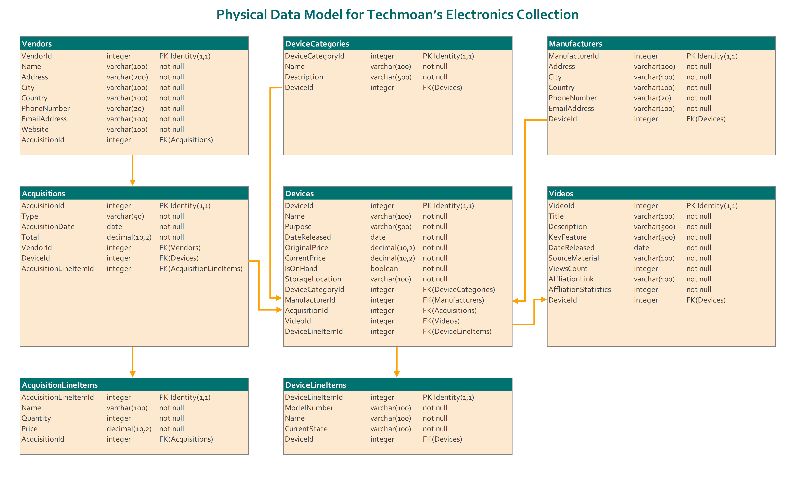

Physical Data Model for Techmoan’s Electronics Collection
The physical data model is designed to efficiently manage Matthew Taylor's expansive retro electronics collection, serving as the cornerstone for the Techmoan YouTube channel. It comprises eight crucial tables, including Vendors, Acquisitions, AcquisitionLineItems, DeviceCategories, Devices, DeviceLineItems, Manufacturers, and Videos. This model streamlines content creation workflows and offers comprehensive tracking of the entire lifecycle of featured devices, enabling Matthew to monitor the device's whereabouts, current state, value, and featured aspects in his YouTube videos. Additionally, the model facilitates tracking of affiliated links incorporated into the videos.

The following outlines the benefits of this data model:
- Strategic Decision-Making: The proposed model empowers Matthew with data-driven insights for strategic decision-making. By efficiently tracking the collection and understanding the acquisition sources, Matthew can make informed decisions about content creation, sponsorship, and future acquisitions.
- Content Optimization: With a robust foundation for device tracking, the model aids in content optimization. Matthew can analyze the performance of specific devices, discern viewer preferences, and tailor future content to align with audience interests, thereby enhancing overall channel engagement.
- Streamlined Device Management: The model streamlines device management by providing a comprehensive view of each device's lifecycle. Matthew can easily monitor the current state, value, and condition of devices, ensuring effective maintenance and timely updates to the audience.
- Financial Transparency: Through the integration of the Acquisitions table, Matthew gains financial transparency. He can discern how much was spent on each device, categorize expenses based on vendors or acquisition methods, and optimize budget allocation for future content creation.
- Affiliation Link Tracking: The model's ability to track affiliation links enhances Matthew's monetization strategy. By monitoring the performance of affiliated links, he can refine partnerships, negotiate better deals, and maximize revenue streams associated with his YouTube channel.